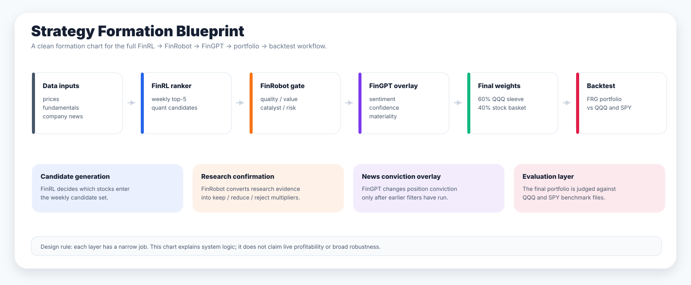
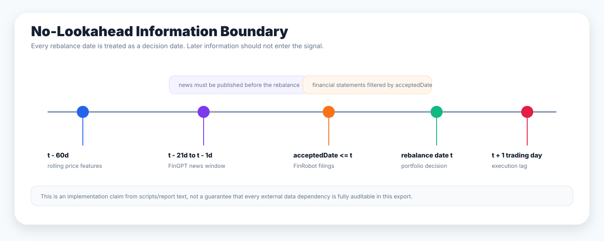
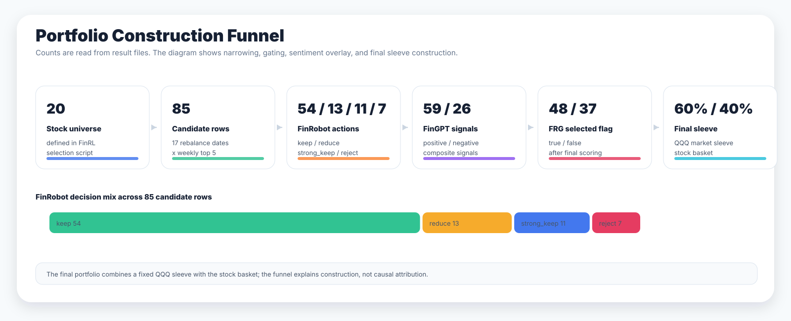
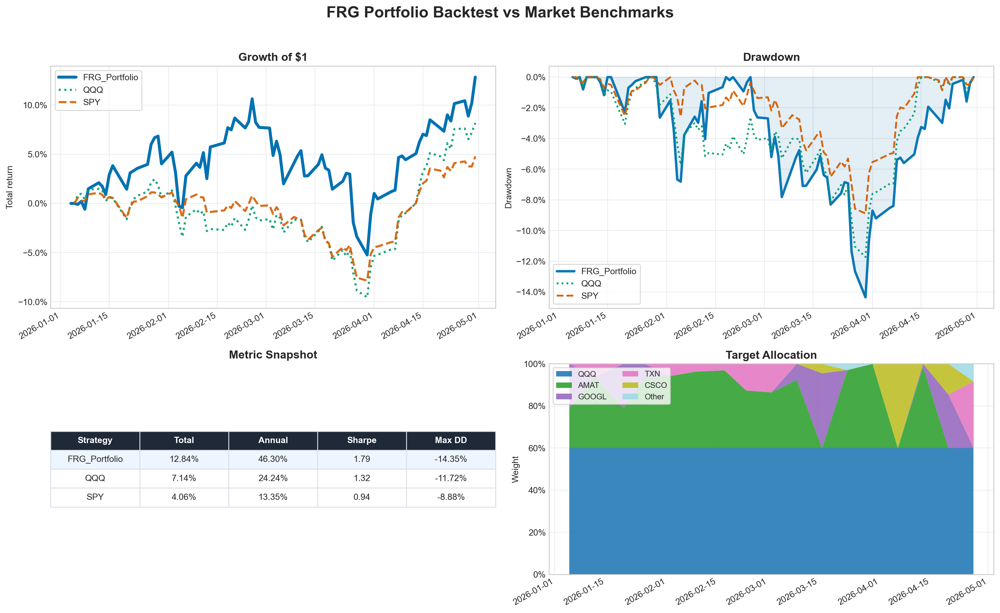
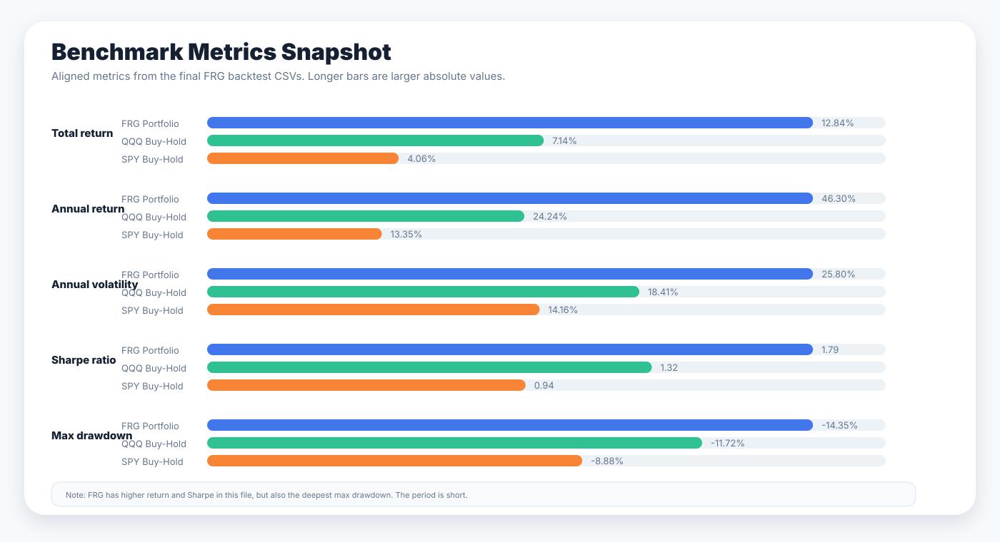
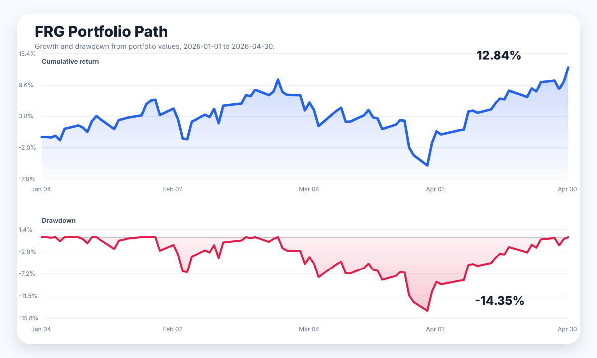
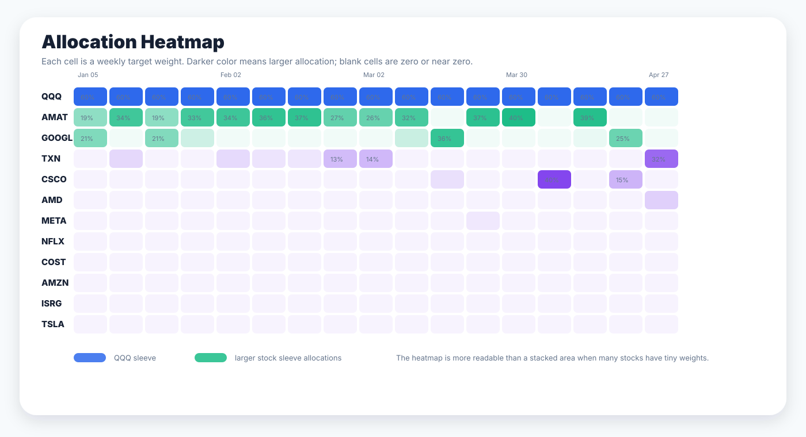
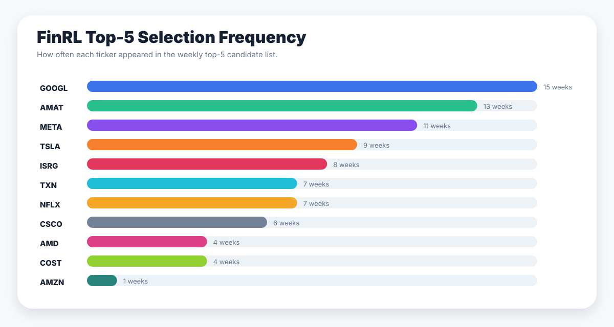
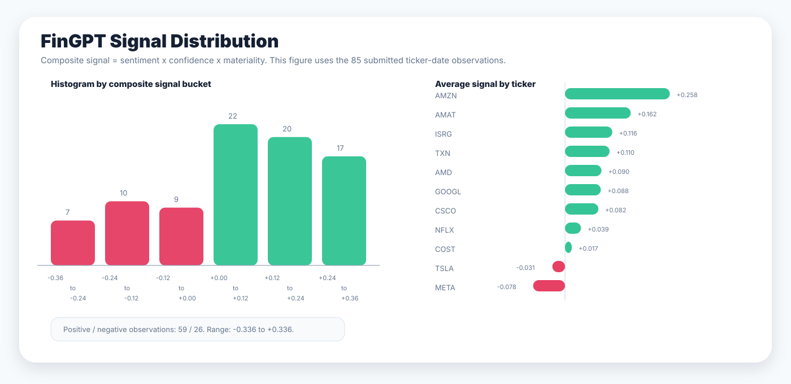

Price and feature inputs
Adjusted close prices are downloaded in the selection and backtest scripts. Momentum, volatility, and drawdown features are built point-in-time.
FinRL / FinRobot / FinGPT layered portfolio research
This project connects quantitative stock selection, point-in-time research confirmation, news sentiment scoring, portfolio weighting, and benchmark evaluation in one static research prototype.
FinRL first generates weekly top-5 candidates, FinRobot filters and reweights those names using fundamental and news-based evidence, and FinGPT applies a final no-lookahead sentiment overlay before the portfolio is backtested against QQQ and SPY.
Motivation
The practical question is whether a structured pipeline can turn noisy price data, financial evidence, and news context into a portfolio decision that can be evaluated transparently. Rather than treating an LLM as a standalone stock picker, the design assigns each module a narrow role.
The final output is a weekly long-only portfolio with normalized weights, a fixed QQQ market sleeve, selected individual stocks, and benchmark metrics. The useful output is not only a return number; it is also a traceable record of which tickers were selected, how weights changed, and where the strategy took risk.
System architecture

Adjusted close prices are downloaded in the selection and backtest scripts. Momentum, volatility, and drawdown features are built point-in-time.
A 20-stock universe is ranked weekly. The script combines ML scores and technical scores, then keeps the top 5 candidates.
Selected names receive business quality, valuation, catalyst, and risk scores. These map into keep, reduce, reject, or modest overweight decisions.
A no-lookahead news signal turns sentiment, confidence, and materiality into a composite score that adjusts conviction.
The final portfolio blends a 60% QQQ sleeve with a 40% stock basket. Weights are normalized after each overlay.
The final strategy is compared with QQQ and SPY using return, volatility, Sharpe, Sortino, and drawdown metrics.
Data and preprocessing
The FinRL selection script defines a 20-name large-cap universe: AAPL, MSFT, NVDA, META, AMZN, GOOGL, TSLA, AVGO, AMD, NFLX, ADBE, COST, PEP, QCOM, CSCO, TXN, AMAT, AMGN, INTU, and ISRG.
The required study window is 2026-01-01 to 2026-04-30. Selection is weekly, using Friday-style rebalance dates where available. The FinGPT signal file has 85 ticker-date observations across 17 rebalance dates.
Price features include 20-day momentum, 60-day momentum, 20-day volatility, and 60-day drawdown. The script forward-fills isolated missing price observations and drops all-empty rows or columns.
The repo includes generated CSV outputs, backtest images, and module scripts. Raw external FinRobot dependencies, API keys, and a root README are not present in this snapshot.

Methodology
FinRL is used as the first filter. The current script does not simply buy the whole universe; it scores stocks with a hybrid ML and technical ranking process and selects the weekly top 5 candidates. The output is a table of dates, tickers, ranks, scores, and initial equal weights.
FinRobot acts as an analyst-style gate. It combines point-in-time financial and news evidence into business quality, valuation, catalyst, and risk scores. The final score becomes a multiplier: strong keep, keep, reduce, or reject. This layer is intended to reduce blind reliance on the quantitative rank.
The FinGPT layer is used conservatively. The report describes a deterministic base scoring layer plus an LLM-style calibration idea, producing sentiment, confidence, and materiality values. The submitted signal file stores the resulting composite signal for each ticker-date observation.
The final backtest uses the layered FRG signals, a one-trading-day execution lag in the backtest script, a transaction cost parameter of 0.001, a 60% QQQ market sleeve, and QQQ/SPY buy-and-hold benchmarks.

Backtest results
vs QQQ 7.14% and SPY 4.06%
vs QQQ 1.32 and SPY 0.94
deeper than QQQ and SPY
59 positive and 26 negative signals

finrl/results/frg_portfolio_backtest/frg_portfolio_backtest.png.
It keeps the full result context together: equity curve, drawdown, metrics, and target allocation.


frg_portfolio_portfolio_values.csv.
This split view focuses on the path of the final portfolio itself.

frg_portfolio_weight_signals.csv. It is more readable than a
stacked area chart because many stock weights are tiny or active only in a few weeks.


Key findings
Over 2026-01-01 to 2026-04-30, the FRG portfolio reports 12.84% total return and 1.79 Sharpe, above QQQ and SPY in the aligned benchmark files.
FRG's maximum drawdown is -14.35%, compared with -11.72% for QQQ and -8.88% for SPY. The strategy accepted more downside risk during the period.
The full FRG result is close to the FinGPT score-only backtest artifact. That supports a cautious interpretation: the pipeline integration is useful for structure and traceability, but the current files do not prove a large standalone contribution from every layer.
| Strategy | Total return | Annual return | Annual volatility | Sharpe | Max drawdown |
|---|---|---|---|---|---|
| FRG Portfolio | 12.84% | 46.30% | 25.80% | 1.79 | -14.35% |
| QQQ Buy-Hold | 7.14% | 24.24% | 18.41% | 1.32 | -11.72% |
| SPY Buy-Hold | 4.06% | 13.35% | 14.16% | 0.94 | -8.88% |
Interpretation
This is best read as a pipeline demo and research prototype. The strongest evidence is that the repo has a concrete, inspectable path from stock selection to research scoring, news scoring, target weights, portfolio values, and benchmark metrics. The result is encouraging for this short window, but the site deliberately avoids claiming broad robustness or live profitability.
The 60% QQQ sleeve matters. It stabilizes the portfolio and makes the system partly a market exposure strategy rather than a pure stock-selection strategy. The individual stock overlay still affects performance and drawdown, but any interpretation should separate market beta from alpha generated by FinRL, FinRobot, or FinGPT.
Limitations
The required 2026-01-01 to 2026-04-30 period is too short to establish stable performance.
The current export includes outputs, but not every raw data dependency or external FinRobot component needed for a clean rerun.
The scripts attempt no-lookahead handling, but survivorship bias, data availability timing, and benchmark alignment still require careful audit.
A transaction cost parameter exists, but the repo does not include a full sensitivity study, turnover report, or walk-forward robustness grid.
News and sentiment signals depend on filtering, keyword logic, and LLM-style calibration assumptions that can miss context.
QQQ and SPY are useful references, but the strategy contains a fixed QQQ sleeve, so benchmark interpretation should be explicit.
Reproducibility
finrl/scripts/, finrobot/scripts/, and fingpt/scripts/ contain the current pipeline scripts and runbooks.
finrl/results/ and finrobot/results/ contain the CSVs and figures used for this web page.
The teammate's LaTeX narrative remains untouched at report/main (1).tex.
This static site is isolated under docs/ and uses copied or regenerated figures under docs/assets/figures/.
The root README.md requested in the brief is not present in this local snapshot.
No PDF report was found. Turnover, complete transaction-cost attribution, and full robustness
testing metrics were not available, so they are not claimed on this page.